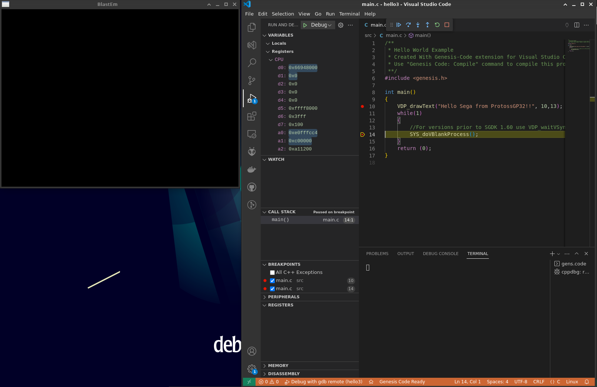

Mega Drive SDKs
Introduction
Getting started
Installing SGDK
We’ll be deploying the excellent and mature SGDK by Stephane Dallongeville, that allows to develop Mega Drive games in C language.
Developing on Linux
SGDK works natively on Windows, but there are options to make it work on Linux:
- Using Wine
- Using Marsdev. Here we install the SDK locally instead of using a Docker image for building the project
- Quick installation steps: link
- Compile time is long, so let it do its thing
- Set the
$MARSDEVenvironment variable in.bashrclike this:export MARSDEV=/home/$USER/mars - Create a softlink within the
$MARSDEVpath that points to the SGDK created on compile time within the Marsdev repository. This is required for later use in VS Code extensions
Compiling
We can use the following alternatives to compile our projects:
- Locally, previously compiling SGDK or Marsdev toolchains
- Using a Docker image (Dockerfile provided in Stephane’s repository). Just follow these instructions to build your own SGDK docker image and use it to compile your code
- This approach also uses Wine within the Docker container to launch SGDK
- Using Doragasu, another Docker image. Again, just use these instructions to build your project
- This approach uses native Linux compiler, much faster
Some compile times comparison:
| Approach | Time |
|---|---|
| SGDK docker | 13.721s |
| Doragasu docker | 6.952s |
Debugging
When using Marsdev, the GDC for m64k (m68k-elf-gdb) isn’t compiled by default. Launch the following command from the git repository root path:
Take note of the binary path as we’ll have to check it when configuring our text editor.
We also need an emulator to run the code and to properly attach when debugging. BlastEm is a relatively modern emulator with embedded debugger. Gens is another good option with very intuitive GUI for debugging purposes.
BlastEm - Use nighly builds
- Download the latest nightly build. At the moment of writing this article (2023/05/07), the available stable 0.6.2 version fails due to missing instructions
- Verified version: nightly build from 2023/04/03
- Uncompress the file and add the resulting directory to your
$PATHenvironment variable- Make sure to update it in your
.bashrcfile
- Make sure to update it in your
Text editors
VS Code
We’ll be using Genesis Code extension by Zerasul to help us with the programming side of things. This extension is compatible with all previously mentioned compiling options, both Docker images and Marsdev.
Configuration:
- Check
Doragasu Imageif you plan on using Doragasu GitLab image for building purposes - Set
dockeras the Toolchain Type if you plan on using Docker images on build stage - Set the
$MARSDEVenv variable
Creating a new Mega Drive project is as simple as launching Genesis Code: create project from the Command palette. Then check that the .vscode path has been created and make sure that both launch.json and settings.json point towards the right MARSDEV paths, else VS Code won’t include the SGDK headers to the project.
Debug configuration
In order to properly debug using BlastEm, check the .vscode/launch.json file and make sure that everything points towards the correct paths:
program: should be the ELF program created when compiling with the debug options enabled (Genesis Code: Compile for Debuggingin the command palette).- This file must include the symbols
- When compiling with SGDK, the generated file is
out/rom.out
sourcefileMap: it must point to the SGDKsrcpath, retrieved using the Marsdev make targetsmiDebuggerPath: don’t touch it. Just make sure you compiled them68k-elf-gdbas told in previous stepsmiDebuggerArgs: make sure that the emulator name is correct and that it launches theout/rom.binfile
Once done, go to the Run and Debug option (CTRL + SHIFT + D), select the Debug with gdb remote profile and click on play. If a breakpoint has been set in your code, the Debug var should start to show some info:

include-code-files.lua
--- include-code-files.lua – filter to include code from source files
---
--- Copyright: © 2020 Bruno BEAUFILS
--- License: MIT – see LICENSE file for details
--- Dedent a line
local function dedent (line, n)
return line:sub(1,n):gsub(" ","") .. line:sub(n+1)
end
--- Filter function for code blocks
local function transclude (cb)
if cb.attributes.include then
local content = ""
local fh = io.open(cb.attributes.include)
if not fh then
io.stderr:write("Cannot open file " .. cb.attributes.include .. " | Skipping includes\n")
else
local number = 1
local start = 1
-- change hyphenated attributes to PascalCase
for i,pascal in pairs({"startLine", "endLine"})
do
local hyphen = pascal:gsub("%u", "-%0"):lower()
if cb.attributes[hyphen] then
cb.attributes[pascal] = cb.attributes[hyphen]
cb.attributes[hyphen] = nil
end
end
if cb.attributes.startLine then
cb.attributes.startFrom = cb.attributes.startLine
start = tonumber(cb.attributes.startLine)
end
for line in fh:lines ("L")
do
if cb.attributes.dedent then
line = dedent(line, cb.attributes.dedent)
end
if number >= start then
if not cb.attributes.endLine or number <= tonumber(cb.attributes.endLine) then
content = content .. line
end
end
number = number + 1
end
fh:close()
end
-- remove key-value pair for used keys
cb.attributes.include = nil
cb.attributes.startLine = nil
cb.attributes.endLine = nil
cb.attributes.dedent = nil
-- return final code block
return pandoc.CodeBlock(content, cb.attr)
end
end
return {
{ CodeBlock = transclude }
}